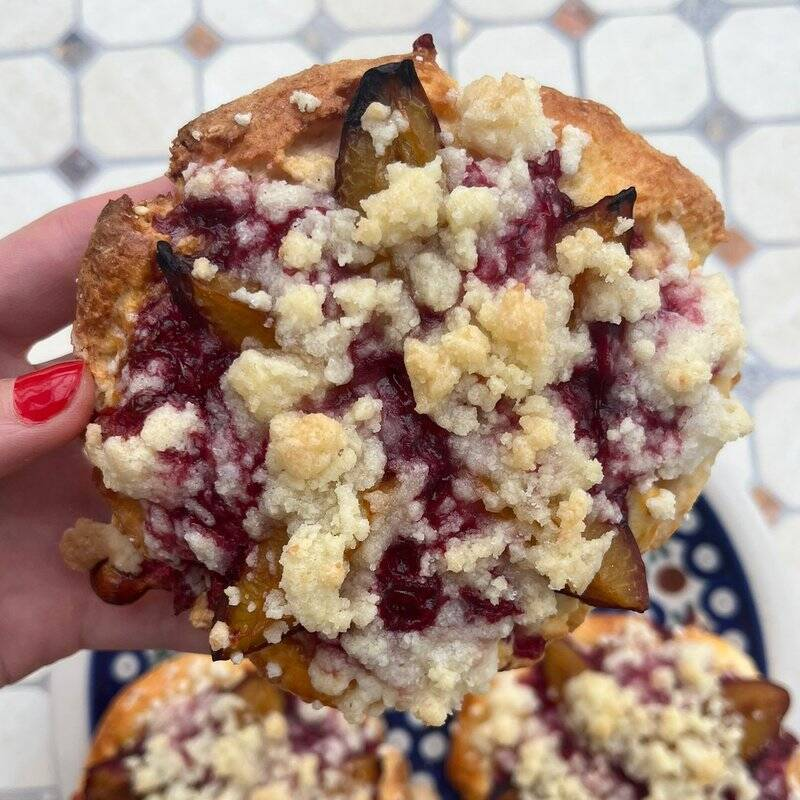

Quark-Oil Dough: The German Bakery Staple Behind Our Star Coins

SaveSelling Star Coins at the market stand has led to the same conversation a few times now. Someone looks at the tray and asks what it is. I have been trying to explain it ever since, and the best I have come up with is this: at least to my American palate, it tastes like nothing I grew up with. Light, a little tangy, tender all the way through.
The Quick Dough
The dough has a name: Quark-Ölteig, quark-oil dough. In Germany it is one of the staples of any bakery counter, the quick dough you reach for when you want a tray of pastries without fussing with yeast or letting anything rise overnight. It bakes up crisp at the edge and stays tender underneath, which is exactly the base a fruit pastry wants. Quark itself is the common thread: you will find it in Quarkbällchen, little fried doughnut holes dusted with powdered sugar, and in German cheesecake, which is baked with quark instead of cream cheese.
Quark Does the Work
The ingredient doing the work is, of course, quark. If you have been reading along, you might remember our earlier post on quark, the German dairy product that most Americans have never heard of at the grocery store. It is the reason our German Cheesecake tastes the way it does, and it is the reason this dough tastes the way it does. Quark has a fresh, lightly tangy character that butter and cream cheese just do not have, and in a pastry base it shows up as a kind of lightness.
Streuseltaler
In Germany the whole category has a name: Streuseltaler, streusel coins, since the streusel on top is half the point. The build is always the same: quark-oil dough on the bottom, a layer of jam, the fruit, and Streusel over everything. What changes from one Streuseltaler to the next is the fruit.
Star and Sun Coins
Our two main versions are Star Coins, Sternentaler, with plums and cherry jam, and Sun Coins, Sonnentaler, with apples and apricot jam. Alongside those, we have been selling others at the market with different fruits: cherries and pears. Personally, I like the cherry one the most; the ones in the photo are the plum version. Either way, they are the kind of pastry that disappears from the tray quickly.
Want to Taste the Difference?
The difference is the quark. Find us at a local Asheville farmers market or reach out at info@germanbakingasheville.com to reserve a batch.